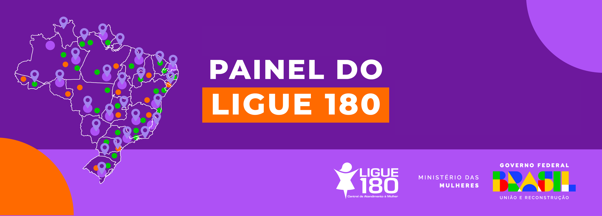

Quebre o ciclo da violência doméstica
Violência doméstica não é assunto privado — é um problema social. Juntos, podemos pôr fim à violência doméstica. Informação, denúncia e apoio salvam vidas.
Violência doméstica não é assunto privado — é um problema social. Juntos, podemos pôr fim à violência doméstica. Informação, denúncia e apoio salvam vidas.
Violência nem sempre começa com agressão física. Controle, humilhação, isolamento e medo constante também são sinais. Escute seus sentimentos. Na Lei Maria da Penha estão previstos cinco tipos de violência doméstica e familiar contra a mulher: física, psicológica, moral, sexual e patrimonial.
• Instituto Maria da Penha - Os tipos de violência contra a mulher
A violência doméstica raramente é um episódio isolado. Ela tende a se repetir, se intensificar e se tornar cada vez mais perigosa. Embora possa se manifestar de diferentes formas, a psicóloga norte-americana Lenore Walker identificou um padrão comum: o ciclo da violência, que se repete dentro de relações abusivas. Se você está passando por isso, saiba que a culpa nunca é sua. A responsabilidade é de quem agride, humilha e tenta controlar. Milhares de mulheres já viveram essa realidade — e muitas conseguiram romper com ela. Você também pode. Não espere por um momento ideal. O momento de buscar ajuda é agora. Seu recomeço começa hoje. Quebre o ciclo. Você não está sozinha.
Peça ajuda. Fale com alguém de confiança. Ligue para serviços de apoio. Vá até uma delegacia. Procure uma rede de proteção. Existem braços prontos pra te acolher.
• Coordenadoria Estadual da Mulher, TJ/RS - Como pedir ajuda
• Coordenadoria Estadual da Mulher, TJ/RS - Orientações
• Ministério da Mulher, Governo Federal - Central de Atendimento à Mulher
A denúncia é o primeiro passo pra virar a página. É um ato de coragem — e de amor por si mesma. Ligue 180. Sua voz pode salvar sua vida. E também a de outras. Denuncie.
• Delegacia de Polícia Online da Mulher - RS
Disque 100 – Direitos Humanos (aceita denúncias anônimas)
Disque 180 – Central de Atendimento à Mulher
Disque 190 – Polícia Militar (em caso de emergência)
 Ligue 180, acesse o site da Central de Atendimento à Mulher ou acione o canal do Whatsapp da Central de Atendimento à Mulher número (61) 9610-0180 para conseguir orientação sobre leis, direitos das mulheres e serviços da rede de atendimento (Casa da Mulher Brasileira, Centros de Referências, Delegacias de Atendimento à Mulher (Deam), Defensorias Públicas, Núcleos Integrados de Atendimento às Mulheres, entre outros.
O site da Coordenadoria Estadual da Mulher em situação de violência doméstica oferece orientações sobre as medidas protetivas e de orientações sobre como pedir ajuda.
Disque 190 em casos de violência doméstica e outras emergências. A Polícia Militar atua de forma imediata para proteger vítimas, garantir a segurança e encaminhar os envolvidos aos órgãos competentes. Sua ação rápida pode salvar vidas e interromper ciclos de agressão.
Outros números para contato com a PM do RS
Disque 181 para fazer uma denúncia. As Delegacias Especializadas no Atendimento à Mulher (DEAM) ou Delegacias de Polícia prestam atendimento especializado, contribuindo para superar o medo e romper com o silência. Realizam registro das ocorrências policiais, encaminham as solicitações de Medidas Protetivas Urgentes em favor das vítimas, encaminham a pessoa agredida a outros órgãos públicos de atendimento, acolhimento e abrigamento. Bem como, realizam investigações dos delitos e encaminham as vítimas ao DML, hospitais ou postos de saúde.
Site da Polícia Civil do RS
Delegacia de Polícia Online da Mulher - RS
♀
Tudo o que você precisa saber sobre medidas protetivas para a mulher, criança e idoso
♀
Violência doméstica no Brasil: o que é, tipos e como denunciar
♀
Histórico da Patrulha Maria da Penha da Brigada Militar do Rio Grande do Sul
♀ Instituto Maria da Penha
♀ Justiceiras - Força-tarefa pró-mulher
♀ ONG Recomeçar
A violência doméstica não afeta apenas mulheres; idosos e crianças também são alvos de abusos em seus próprios lares. Infelizmente, muitos casos permanecem ocultos devido à dependência emocional, medo ou falta de conhecimento sobre os direitos e canais de denúncia.
No Brasil, o Estatuto da Pessoa Idosa (Lei nº 10.741/2003) assegura direitos fundamentais às pessoas com 60 anos ou mais, incluindo proteção contra violência física, psicológica, financeira e negligência. O artigo 99 do Estatuto estabelece penas para quem expuser a integridade do idoso a perigo, com reclusão de dois meses a um ano e multa, podendo aumentar dependendo da gravidade do ato.
A Lei nº 14.344/2022, conhecida como Lei Henry Borel, criou mecanismos para o enfrentamento da violência doméstica contra crianças e adolescentes. Ela considera crime hediondo o homicídio de menores de 14 anos e estabelece medidas protetivas específicas para esse público.
Além disso, a Lei nº 13.010/2014, chamada Lei Menino Bernardo, proíbe castigos físicos e tratamento cruel ou degradante na educação de crianças e adolescentes, promovendo a parentalidade positiva.
A violência doméstica também pode ser denunciada por amigos, vizinhos e familiares. A maioria das vítimas tem dificuldade de denunciar por medo, vergonha ou dependência. Por isso, você pode ser a ponte entre o silêncio e a proteção.
Disque 100 – Direitos Humanos (aceita denúncias anônimas)
Disque 180 – Central de Atendimento à Mulher
Disque 190 – Polícia Militar (em caso de emergência)
• Machucados frequentes com justificativas incoerentes
• Mudanças bruscas de comportamento ou isolamento
• Gritos, brigas e pedidos de socorro vindos da casa ao lado
• Crianças tristes, agressivas ou retraídas
• Idosos negligenciados ou visivelmente assustados
Denunciar salva vidas. Você pode ser o único que ouviu, viu ou percebeu algo. Não ignore os sinais.
Este espaço é seguro e confidencial. Aqui, você pode pedir informações, relatar sua história, dar sugestões ou simplesmente desabafar. Sua voz é importante.
Cada relato conta. Ao compartilhar sua experiência ou opinião, você contribui para fortalecer nossa rede de apoio e ajudar outras pessoas que estão passando por situações semelhantes. Todas as mensagens são tratadas com respeito e sigilo.
Estamos ao seu lado. Preencha o formulário com o que quiser compartilhar. Use apenas o seu primeiro nome, se preferir, você pode usar um nome fictício — o importante é que você se sinta acolhida e ouvida.
Quebre o Ciclo é um projeto desenvolvido como parte de uma atividade de extensão do curso de Análise e Desenvolvimento de Sistemas da Uniasselvi, com o objetivo de informar, acolher e conscientizar sobre a violência doméstica.
Quebre o Ciclo • 2025 • Desenvolvido por Regismrs